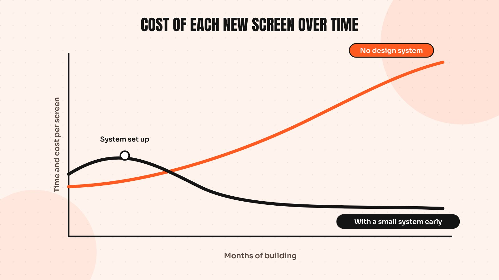
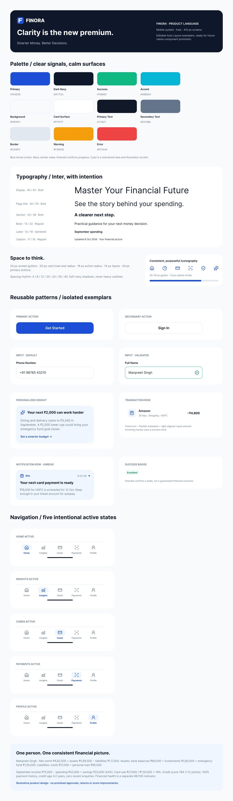

Why Startups Need a Design System Earlier Than They Think
Most startups wait until the product is a mess before building a design system. Starting small and early is cheaper, faster and kinder to your developers.

“We’re too small for a design system.” I hear this from founders all the time and I understand why. Design systems sound like something big companies build with a dedicated team and a 200-page documentation site.
But a design system doesn’t have to be big. At its smallest, it’s an agreement: these are our colours, our type sizes, our spacing and our core components. That agreement is cheap to make early and expensive to retrofit later.
The real cost of waiting
Every new screen built without shared components adds a little inconsistency. One button has 8px corners, another 12px. One form shows errors in red text, another in a red box. Individually these are tiny. Together they become design debt.

Design debt shows up in ways founders do notice:
- Developers rebuild the same component three different ways
- Every new feature needs a designer, even for simple screens
- Small brand changes take weeks because colours are hard-coded everywhere
- The product looks less trustworthy than it really is, which hurts sales and investor demos
Why earlier is easier
When your product has 20 screens, creating a system takes days. When it has 200, it takes months, because you first have to audit and untangle everything that already exists. Early on, you also have fewer opinions to align and fewer edge cases to handle.
There’s a speed benefit too. Once your team has reusable buttons, inputs, cards and modals, a new feature is assembled rather than invented. That speed compounds every sprint.
The smallest design system worth building
You don’t need everything on day one. This is the starter kit I usually set up for early-stage products:
- Tokens: brand and neutral colours, 5 to 7 type sizes and a spacing scale
- Core components: button, input, select, checkbox, card, modal and toast
- States: hover, focus, disabled, loading and error for each component
- A few patterns: forms, empty states and tables, because they appear everywhere
- One page of rules: when to use each button style and how errors are written
That’s enough to keep most products consistent for a long time. Add components when you need them for real screens, not because a big company’s system has them.

Signs you’ve waited too long
If any of these sound familiar, start now rather than later:
- You have more than one shade of your brand colour and nobody knows which is right
- Developers ask “which button do I use?” on most tickets
- You’re planning dark mode, white-labelling or a second product
- A new designer or developer needs weeks to understand the UI
Where to go from here
The thinking behind most modern systems comes from Atomic Design by Brad Frost, which is free to read online and explains how small pieces build up into full pages. For the practical Figma side, my guide to building a Figma design system for startups walks through tokens, components and documentation step by step.
If you’d rather have a system set up for you, it’s something I do for SaaS teams and agencies regularly, often as part of a white-label partnership.
Send me your screens and I’ll show you where users drop off and what to fix first.
Quick answers
When should a startup create a design system?
As early as you have a handful of core screens and plan to keep building. A small system with tokens and core components takes days to create early on, while retrofitting one into a large product can take months.
What is design debt?
Design debt is the build-up of small inconsistencies, such as different button styles, colours and spacing, that makes a product slower to change and less trustworthy to use.
What should a minimal design system include?
Colour, type and spacing tokens, core components such as buttons, inputs, cards and modals, their states, a few common patterns and a short page of usage rules.